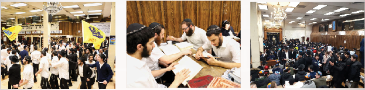

משולחנות הפארבריינגענ’ס מספר הרב יצחק אקסלרוד : בתשמ ” ח למדתי בתור בחור בישיבת
מספר הרב יצחק אקסלרוד: בתשמ”ח למדתי בתור בחור בישיבת “אהלי תורה” בקראון–הייטס. בסוף הקיץ (בתקופת תמוז) יצאתי עם מספר חברים להדריך במחנה קיץ בדטרויט.
משולחנות הפארבריינגענ’ס
מספר הרב יצחק אקסלרוד: בתשמ”ח למדתי בתור בחור בישיבת “אהלי תורה” בקראון–הייטס. בסוף הקיץ (בתקופת תמוז) יצאתי עם מספר חברים להדריך במחנה קיץ בדטרויט.
“בתום חודשיים, נגמרה רשמית הקייטנה, אך ניתנה אפשרות למי שרוצה להישאר לעוד שבועיים להמשך הקייטנה. רוב הילדים חזרו לביתם, אך קבוצה של כשלושים ילדים לערך נשארו. כיון שרוב הילדים יצאו רוב המדריכים שהגיעו גם הם עזבו, “וכך יצא, משחזר הרב אקסלרוד, שנשארנו קבוצה של ארבעה בחורים. המדריך הראשי אף הוא עזב, והייתה אווירה מיוחדת. ביום השני או לאחריו, החלטתי לפנות אל הילדים וללמדם ש”צריך לחשוב חסידות”.
“רוב הילדים שנשארו היו בניהם של שלוחים מערי השדה. כינסתי את כולם באולם המרכזי, והתחלתי להסביר להם בשפתם מה זה נקרא לחשוב חסידות. פשוט הדגמתי להם. מניחים את היד על השולחן. ועל כף היד משעינים את המצח, סוגרים את העיניים, ומתחילים לחשוב.
המדריכים שהיו איתי לא האמינו למראה עיניהם. הילדים שהיו נחושים לקחת את העניין ברצינות. השעינו את מצחם על היד שהציבו על השולחן, ובהדרכתי החלו לחשוב את שורות התניא שלמדו במשך הקייטנה בע”פ. לאחר כדקה או שתיים, הפסקנו, ועברנו להמשך היום בפעילויות. וכך עשינו מספר ימים. בסיום הקייטנה, לאחר שכל הילדים עזבו, הגיע הזמן שאנו נשוב למקום לימודנו ב”אהלי תורה”. היה זה כבר תחילת אלול תשמ”ח, נסענו לשדה–תעופה כשאלינו מצטרפים שישה ילדים הגרים בקראון–הייטס שהשתתפו בקייטנה. נחתנו לפנות ערב בניו יורק. “רצנו למונית, וביקשנו מהנהג שיסע מהר”. משחזר הרב אקסלרוד בערגה. “אנחנו מיהרנו להספיק מעריב עם הרבי”. הרבי שהיה אז בשנת האבלות אחר הרבנית, התפלל בביתו. הגענו לבית של הרבי עם הילדים ממש בתחילת מעריב. בסוף התפילה, הסתכל הרבי על הילדים במבט מיוחד. בדרך–כלל, לאחר התפילה היה הקהל יוצא מיד את הבית, והרבי היה עולה לחדרו במדרגות המובילות אל הקומה העליונה. לאחר שיצא רוב הקהל, שהיה קטן יחסית, ירד למטה המזכיר ר’ לייבל גרונר והודיע שהרבי יגיד כעת שיחה וש”הרבי ביקש שהילדים יעמדו מולו. בשורה הראשונה”. לאחר כמה רגעים הרבי ירד למטה ופתח בשיחה שנסבה על החומש בשיעור החת”ת היומי.
ב”סיום השיחה” שהייתה “פתאומית”, הרגשתי שהרבי מייקר ומחשיב מאוד את העובדה שהילדים “חשבו חסידות”, וזוהי הסיבה שירד לומר שיחה בשבילם.
אגב, בהתוועדויות תשמ”ח נכתב אודות שיחה זו שנאמרה לילדי קעמפ “גן ישראל מישיגען, דטרויט” (התוועדויות ח”ד עמ’ 224), מי שלא נוכח בשיחה, יכול לחשוב שהיה זה לכמות גדולה, “לקעמפ שלם”, היה זה לא יותר משישה ילדים כאמור…

לאחר מנחה, מתקיים השיעור היומי בדבר מלכות השבועי, על–יד ארון קודש, יש לציין ששיעור זה מועבר בשידור חי לכל רחבי תבל באמצעות הטלפון. היום השיעור נמסר ע”י הת’ שלום דובער שי’ אלישביץ.
כרגיל במשך היום מגיעים הרבה קבוצות לבקר בשערי המקדש, ואכן לקראת ערב, הגיעה קבוצה גדולה מהעיר אשדוד שבארה”ק, קבוצה זו זכתה לתדרוך וסיור מפורט בה”בית” ובמבואותיו, ולאחר מכן לכתוב מכתב לכ”ק אד”ש ולבקש את ברכתו הק’.
אחרי השעה עשר פינו את השטח הקדמי בזאל לריקודים, שנמשכו עד השעה אחת–עשרה ורבע.
יום שני, ד’ אדר
בקריה”ת עלו ב’ חתנים, ולאחר “שלישי” בו לא זכינו עדיין לראות את העולה הראוי לעלות בעלייה זו - ה”שוכן בבית הזה”, כ”ק אדמו”ר מלך מהמשיח שליט”א - נערכו חמישה “מי–שברך” ליולדת. התפילה הסתיימה בשעה 10:46.
בהפסקת ערב, בשעה 7:40 התקיים השיעור הקבוע לתלמידי ה”קבוצה” בעניני גאולה ומשיח. השיעור נמסר ע”י הת’ שלום שי’ טל.
לאחר הריקודים, בסביבות השעה 11:30 נפתחה ההתוועדות השבועית לחיזוק האמונה בכ”ק אד”ש, ובקיום הוראותיו בעניין שהזמ”ג “קבלת משיח צדקנו בפועל ממש”. ההתוועדות נפתחה בלימוד קטעים משיחות אד”ש בעניני גאולה ומשיח, מתוך הקונטרס הנפלא “יחי המלך”. כשמיד לאח”ז מתיישבים כולם מתוך אהבת ריעים להתעורר בעניני השעה.
יום שלישי, ה’ אדר
באמצע סדר נגלה (בשעה אחת לערך) התכנסו בזאל מאות ילדים יהודיים מכל רחבי ניו יורק, ל”ראלי” - כינוס ילדים המתקיים מידי שנה לקראת חג הפורים, עם ילדי השל”ה.
בכינוס הכריזו נציגים מהילדים את י”ב הפסוקים, נתנו צדקה, והוסבר להם על חשיבותו של העם היהודי עליהם זכו להימנות, והימים המיוחדים בהם אנו עומדים. לקראת סיום הכינוס נהנו הילדים ממופע להטוטים מיוחד.
לאחר מנחה התקיים השיעור הקבוע בדבר–מלכות השבועי, הכיבוד בשיעור היום נתרם ע”י ידינו הת’ יצחק הרשקוביץ שכעת מתחתן בארה”ק.
כמה דק’ לפני מעריב, הגיעה קבוצה ענקית של מקורבים מצרפת, ומיד ניגש אליהם אחד הבחורים האחראים על הסיורים במקום. כמובן שכל הקבוצה הסתדרו תיכף ונעמדו מוכנים לתפילה כשסידורים שהובאו במיוחד אחוזים בידיהם, ושירת “יחי אדוננו” בפיותיהם.
לאחר הסדרים, ממש לפני הריקודים נפתחה התוועדות–בר מצוה במזרח 770, לת’ אהרן יוסף שי’ ווינר. דודיו התוועדו עם קהל התמימים שהספיק להתיישב ולחטוף כמה סיפורים על הדוד הזקן הרה”ח ר’ אהרן יוסף בלינצקי ע”ה, שהחתן נקרא על שמו. אחד הסיפורים שסיפר דוד החתן ר’ יואל שי’ בלינצקי: “ר’ אהרן יוסף היה מטפל באביו החסיד ר’ ישראל נח הגדול. הוא טיפל באביו באופן מיוחד בהתמסרות אמיתית. הוא ממש הי’ “מרותק” אליו. פעם, כשנכנס ליחידות, כששאלו הרבי מדוע אינו לוקח על עצמו משרה כלשהי, השיב ר’ אהרן יוסף: אינני יכול כיוון שהנני מתעסק עם אבי ממש בכל היום. לשאלת הרבי “מדוע שלא תמסור את הטיפול באביך לאדם אחר?” השיב: “קאשע” כמו שלי, אף אחד לא יכול להכין לאבא”. כולנו איחלנו לחתן הבר מצווה, שיגדל להיות חסיד יר”ש ולמדן, ואך נחת יגרום לכ”ק אד”ש.
בשעה עשר ועשרים החלו הריקודים, שנמשכו עד לשעה אחת עשרה וחצי בערך. מיד לאחמ”כ התקיים סיום הרמב”ם, בארגונו של האחראי המסור ר’ מנחם גערליצקי שי’.
יום רביעי, ו’ אדר יארצייט
של חדב”נ הרש”ג ז”ל.
היום החל “מבצע תורה” בזאל, המאורגן ע”י מס’ תמימים לכל תלמידי הקבוצה.
לאחר הסדרים, מתקיימים הריקודים של חודש אדר. הריקודים החלו בשעה עשר. המוזיקה או שמא מצב רוחם של הרוקדים היה מיוחד מאוד הערב. אני לא יודע מה קדם למה, אך עובדה היא שבערב ז’ אדר, יום הולדתו של משה רבינו, הריקודים נראו אחרת לגמרי. ה”יום” שבגללו שמחים כל החודש, הורגש והתבטא היטב בריקודים.
(באמצע הריקודים הגיעו ל–770 קבוצה של יהודים מבוגרים מארה”ק. כמובן שהם נכנסו לריקודים, ברגעים הראשונים עדיין רקדו עם המעילים שעליהם, דבר שהשפיע על פניהם שהפכו מיוזעות, ואז לאחר שפשטו את המעילים נכנסו לריקודים בעוצמה גדולה יותר).
לאחר הריקודים, התקיימה בפינה הצפונית–מזרחית של הזאל התוועדות לב’ חברנו מתלמידי הקבוצה, האחים התאומים חיים דוד נטע ויוסף יצחק שיחיו רחמים. כמו”כ ברגעים אלו נפתחת עוד התוועדות יום–הולדת על בימת ההתוועדויות, לת’ מאיר משה הלוי אלטמן שי’. התוועדויות שנמשכו עד לשעות הקטנות של הלילה.
יום חמישי, ז’ אדר
היום הגיעו ממש הרבה קבוצות ל–770. זה התחיל בחסידות בוקר אז הגיעו שתי קבוצות ענקיות מהארץ ומצרפת, שכמובן זכו להניח תפילין עם התמימים שי’. לאחר מכן לפני מנחה, הגיעה ל–770 קבוצה נוספת - הפעם של יהודים מבוגרים תושבי צרפת. כמו”כ במהלך הערב עוד ועוד סטודנטים נכנסו ובאו בשערי המקדש.
לאחר הסדרים מתקיים בחלק האחורי של הזאל, השיעור המרכזי בעניני גאולה ומשיח לעיון. והפעם הנושא שנבחר הוא “גילוי העצם בזמנו אנו”.
השיעור נמסר ע”י הת’ מ”מ הכהן שי’ רייכמן. הנ”ל מציג את קביעת כ”ק אד”ש שכיום ניתן לגלות את עצם הנשמה בחיינו הפרטיים, ולא רק בציור של “מסירות–נפש” וכדו’. לאחר שהשיעור מסתיים, פוצחת התזמורת בקדמת הזאל שכבר הוכן לכך, ל”ריקודים”.
לאחר הריקודים מתוועד עם תלמידי התמימים הרב יצחק אקסלרוד שי’, ראש ישיבת תות”ל פתח–תקווה, ארה”ק.
ההתוועדות עצמה מתקיימת ב”געצל–שול”, שם מתקבצים מרבית מתלמידי הקבוצה’ וכן תמימים השוהים בבית חיינו, לאו דווקא מארה”ק.
הרב אקסלרוד נעמד בדבריו על הזכות העצומה לשהות בדל”ת אמותיו של כ”ק אד”ש, אך “אין זה מספיק עדיין” כלשונו, “מוכרחים לעבוד. ובעבודה פנימית. רק כך אפשר להגיע אל הרבי. בחור שאינו מסוגל להיכנס ברצינות למצב בו הוא “מנגן מאמר” (מתעצם עם מאמר), הרי שהוא “לא התחיל” בהתחיילות הנדרשת להימנות על ה”לגיון של מלך”.
בהקשר לכך הוא מספר הרבה סיפורים (ראה מסגרת), ודורש שוב ושוב מהבחורים להתמסר ולהניח את עצמם בשביל מילוי רצונו של כ”ק אד”ש. ההתוועדות נגמרת בחמש בבוקר.
יום שישי, ח’ אדר
משעות הבוקר מתחילות להופיע בזאל קבוצות רבות של נערים עם שליחם. הם הגיעו בקשר עם תוכנית מיוחדת שתוכננה לשבת הקרובה. בה יטלו חלק נערים ונערות מכל רחבי העולם. מבעוד מועד נתלו ב770 מודעות המבקשות מכל הקהל שהיות ומגיעים כאלף אורחים, כל הזאל יהיה תפוס לישיבתם של האורחים, מלבד המזרח שיהיה שמור לזקני אנ”ש.
אחרי שחרית יצאנו למבצעים בשיא השטורעם. שבוע הבא פורים. תיאמנו עם כל המקורבים על הביקורים שלנו אצלם. מי בלילה ומי ביום, העיקר שיוכל לקיים את כל מצוות החג בשמחה ובהידור האפשרי. אחרי הסיכומים הפורמלים, התוועדנו איתם כמובן שה”חג” שכולנו חוגגים, זהו בזכות “משה רבינו”, שמסירותו לעם היהודי אינה יודעת מעצורים, ואף את חייו משליך מנגד. ו”זוהי גם הסיבה שנמחק שמו מפרשת השבוע - תצווה”. ולא רק “גם היום”, אלא “היום בעיקר”, יש לנו את הזכות להתקשר ולהודות למשה רבינו של כל הדורות כולם, משיח צדקנו, שיגאל אותנו מהגלות הארורה, הרבי שליט”א.
השעון דוחק, ולא ניתן להתוועד עם כולם, אנחנו ממהרים לחזור לשכונה מפאת השבת המתקרבת. כשנכנסתי לזאל, ראיתי אותם. את אלפי הצעירים כשהם ישובים בסדר מופתי (הכניסו הרבה ספסלים) ולומדים קבוצות–קבוצות עם בחורים והשלוחים שהביאו אותם. כל אנ”ש עומדים מתחת לעזרת–נשים (כמה דקות לאחר התפילה, חזר הזאל למצב ה”רגיל”, ויכולנו להתיישב חזרה).
לפני התפילה, שרו כולם ניגונים, כמו “צמאה” בהנחיית המארגנים, ולאחר מכן את הניגון של האדרת והאמונה, כל 770 קפץ ממש. היה זה “מעין” שמחת תורה. כשהורה השעון על חמש דק’ לפני התחלת התפילה, החלו כל הבחורים לשיר בעוז את שירת היחי, אט אט הצטרפו רוב הקהל עם השלוחים אל השירה האדירה.
שבת זכור בליובאוויטש שבליובאוויטש, נמצאים במחיצת משה איש האלוקים, שהוא שהרים את “ידו” ורק בזכות כך “גבר ישראל”. התגלתה עצם נשמתינו.
היום יותר מתמיד, גילוי עצם הנשמה בכוחו של הנשיא, כמבואר במאמר האחרון שחילק כ”ק אד”ש לע”ע, פועל בכולנו להיות “אינגאנצן צוטרייסלט” מכך שעדיין לא זוכים לראות אלוקות באופן אמיתי הפורץ את כל גדרי הגלות. כל עוד אנו מצביעים על מקומו הק’, ולא זוכים להראות על תואר פניו הק’, איננו מסתפקים לא בווידאו ולא בתמונות, לא בתשורות ולא ב”מזכרות”. “רוצים אותך בעצמך”! בבתי אנ”ש יושבים התמימים להתוועד על הנקודה. זהו הציר עליו מתוועדים בשבת זו.
יום שבת, ט’ אדר. “שבת זכור”
לאחר סדר חסידות בו התקיים שיעור בדבר מלכות השבועי, בשעה 9:15 לערך נהיה שקט בביהכ”נ, ועלו כמה אנ”ש על בימת קריאת התורה וקראו פרשת זכור, בכדי שהנשים יוכלו לשמוע. שחרית החל בשעה 10:00. הש”ץ ניגן את “האדרת והאמונה” במנגינה הידועה. א–ל אדון ניגנו במנגינה הרגילה. בממקומך לא ניגנו.
לקריאת התורה הוציאו את הס”ת לקבלת פני משיח צדקנו, והס”ת של כ”ק אד”ש.
התוועדות קודש
כולנו מחכים לראות ולשמוע את כ”ק אד”ש. הרבה חתנים עמדו מול מקומו הק’ וביקשו על ביתם אותם עומדים לבנות בשבוע הקרוב. שיחת ט’ אדר תשנ”ב עדיין מצלצלת באוזנינו: “ניטא די גאולה האמיתית והשלימה בפשטות” זעק כ”ק אד”ש, והוסיף להתבטא “הקב”ה הרי אינו זקוק להמלצות של “מישהו”, ובמילא שהוא יסביר מה קורה כאן…” “רוצים התגלות עכשיו” דרשתי. ולמרות שלא ראיתי, הכתה בי ההכרה שכן. כ”ק אד”ש נמצא כאן. דבר שהוסיף להתעקשותי לראות. לחזות בפני הק’. הבחורים אינם מוותרים. בשעה ארבע כבר יצאנו ל”הקהלת קהילות” בשכונות הסמוכות לבשר להם על הבשורה העומדת להתממש כעת. ההתגלות המובטחת. וכן, זה גם כתוב בפרשת השבוע. “ואתה תצווה”.
מיד לאחר ההתוועדות נפתחות ב–770 התוועדויות לרוב יום הולדת, חתנים, והרבה שלא צריכים סיבה בכדי להתיישב להתוועד.
לאחר מנחה התקיים סדר ניגונים וחזרת דא”ח, במערב 770. לאחר מעריב והקרנת וידאו מכ”ק אד”ש בשנים קודמות החלו הריקודים (לערך בשעה שבע ועשרים). שנמשכו כשעה לערך. באמצע הריקודים, יצאה קבוצה מתלמידי התמימים לכיכר ה”טיים-סקוור” לעריכת “קידוש לבנה” ברוב עם הדרת מלך ברחובה של עיר. שם כבר היו מאות ואלפי סטודנטים שנערכה להם בין השאר תוכנית מיוחדת.
***
אבא, זהו סיכומו של שבוע ב–770. שבוע שלם בחודש אדר. שבוע בו עבדנו ולמדנו, חגגנו והתוועדנו. שבוע שבו “ז’ אדר” אינו תאוריה או שיחה על תאריך, אלא סיפור חיים. אנו לידו. כאן, בדלת אמותיו. הרבי הרש”ב בילדותו בכה על–כך שלא זכה לראות את הקב”ה, וב”דבר–מלכות וירא, תשנ”ב” מבאר כ”ק אד”ש שלא רק הוא היה ראוי לכך. אלא גם אנחנו. והחידוש הוא: ש”באמת אנחנו ראויים”. דבר שמוליד אצלנו את רגש השמחה על הזכיה, אך גם את הצער והתימהון הגדול ביותר: אז למה לא רואים? דאלאי גלות! כאן, במחיצת נשיא–הדור אנו צובטים את עצמנו שוב ושוב, ומגלים שאכן “נצטווינו” כבר ע”י הרבי הנשיא. הוא העלה ורומם אותנו, קירבנו אליו, ובחר בנו להיות עם קרובו. “נצבוט” את עצמנו ונתחבר לנשיא. נגלה את עצם נשמתנו, והוא יגאלנו. בתקווה להיפגש איתך תיכף ומיד במחיצת כ”ק אד”ש, אז נכריז לפניו, כולנו:
יחי אדוננו מורנו ורבינו מלך המשיח לעולם ועד!
דוידי,
ארצות החיים - 770 - בית משיח